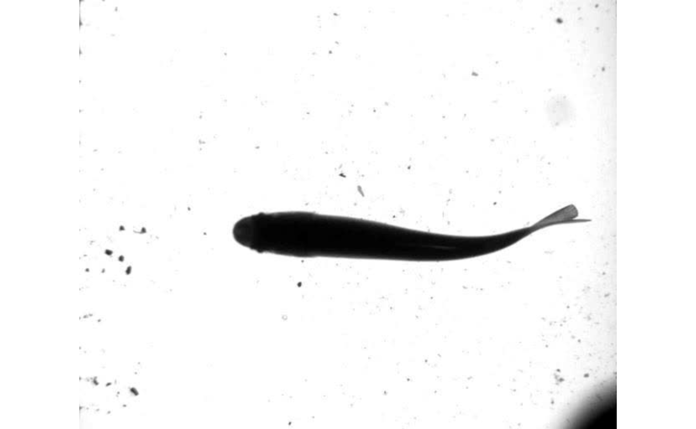
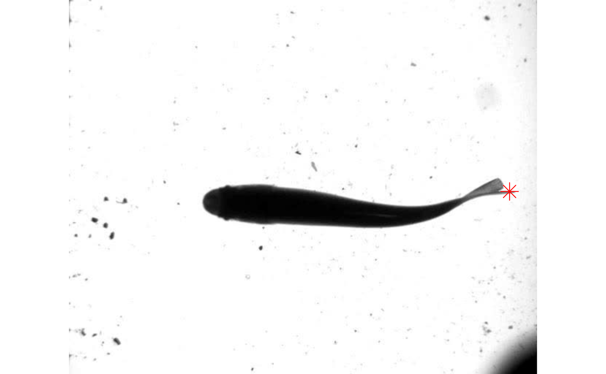
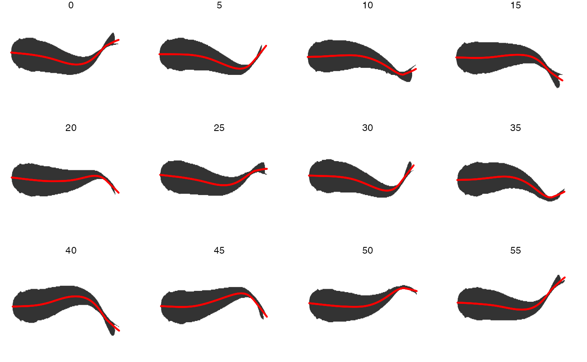
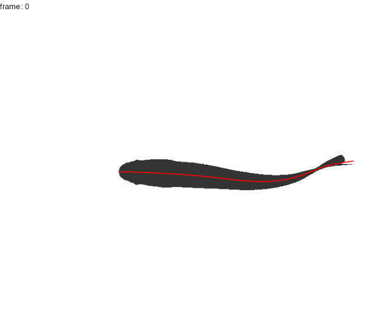

visualization.Rmdtrackter offers users several simple plotting functions for the visualizations of ROI contours, midlines, and position data.
kin functions
The kin functions kin.search(), kin.simple(), and kin.free() all allow users to overlay midline data over original images with if save=TRUE and an output directory is specified with the argument out.dir.
Here, the frames from a video of a swimming juvenile rainbow trout loaded with the package are extracted with video.to.images() and saved to an appropriately named directory.
library(trackter)
trout.vid <- system.file("extdata/vid", "trout.avi", package = "trackter")
dir.create("./trout_images")
vid.to.images(vid.path = trout.vid, out.dir = "./trout_images")Next, an output directory is created for storing the original images with the midline overlay. Then, position and shape data are retrieved using kin.simple() with save=TRUE and the output directory specified by out.dir.
dir.create("./trout_midline")
trout.kin <- kin.simple(image.dir = "./trout_images",save = TRUE, out.dir = "./trout_midline")## Warning: `data_frame()` was deprecated in tibble 1.1.0.
## Please use `tibble()` instead.
## This warning is displayed once every 8 hours.
## Call `lifecycle::last_lifecycle_warnings()` to see where this warning was generated.Images, complete with midline data, are now stored in the output directory.
EBImage::display(EBImage::readImage(list.files("./trout_images",full.names = TRUE)[1]),method = "raster")
By default, the overlayed output image includes three lines. Red indicates the smoothed midline position (“x.sm’ and”y.sm” in the midline table), green the anterior section defined by the ant.per argument, and blue the linear prediction based on the anterior section. Should users want to compile the outputted images into a video, images.to.video()can be used. Likevid.to.images(), this function allows users to useFFmpegsfllexible filtering system through theav` package.
data.overlay() and gg.overlay()
For plotting outside of the kin functions, trackter offers data.overlay() and gg.overlay(). data.overlay() is a simple wrapper for R’s base graphics routines that plots specified position data over a single image. gg.overlay() plots position data over contour data using ggplot2 and optionally builds and saves a GIF animation for multi-frame sequences.
In this example, data.overlay() is used to plot the trailing edge position (‘x’ and ‘y’ in the kin.dat table returned by kin.simple() above) over a single image frame. The function requires that an image be specified with the argument img and the overlay data is specified with over. The overlay data is subsetted with data.table (trout.kin$kin.dat[frame==0,.(x,y)]). Base graphics arguments can also be passed through data.overlay(), in this case cex=2 and pch=8 for expanding the symbol size and specifying the symbol.
data.overlay(img = "./trout_images/trout_000001.jpg",over=trout.kin$kin.dat[frame==0,.(x,y)],col="red",cex=2,pch=8)
Using gg.overlay() users can plot a single frame of data or series of frames as a facetted plot. The function takes tables returned by the kin functions to plot contours and midline, head, or trailing edge data. In addition, gg.overlay() can access the results from fin.kin() to plot the position of fin-like extension.
Here, the midline results for the first full tailbeat cycle of the swimming trout is projected over the smoothed body contours with gg.overlay(). Notice under="cont.sm" and over="midline" which specify the smoothed contour as the underlying data and midline as the overlay data.
gg.overlay(kin = trout.kin,under = "cont.sm",over="midline",frames=seq(0,55,5),size=0.1,col="red",zoom=TRUE)
Optionally, users may produce GIF animations of frame-specific overlayed data. To do so, users must specify animate=TRUE. The animation can be save with save=TRUE and specifying a file name with the filename argument.
gg.overlay(kin = trout.kin,under = "cont.sm",over="midline",size=0.1,col="red",animate = TRUE,save = TRUE,filename = "trout.gif")